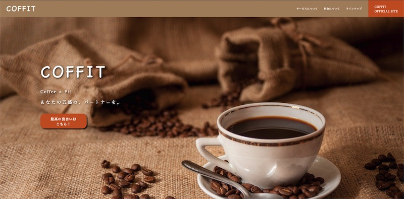

COFFIT
- 
-
https://waon-coffit.netlify.app
制作期間 約3週間 制作担当 企画・ワイヤー・デザイン・コーディング・実装 制作背景 自分が「いまいちコーヒーの好きな味がわからない、好きなコーヒー豆を知りたい」と思ったことがきっかけで企画したマッチングサービス(架空)で、そのLPとして制作。
「coffee × fit」の造語。コンセプトは「あなたの五感の、パートナーを。」POINT！ 30〜50代の生活に少しゆとりのある男女、またコーヒーをもう一段階深く追求したい方をターゲットに、ややエレガントさと落ち着きを重視しました。
私自身が「自分の好きなコーヒーの味や風味ってなんだろう」と疑問に思ったことから考案し、自分意外にも、些細で気にならないだけで実は同じ疑問を内に秘めている人がいるのではと考え作成にいたりました。
ひとつひとつのコピーにもこだわりを持って考え、より目に付くような言葉遣いを心がけました。